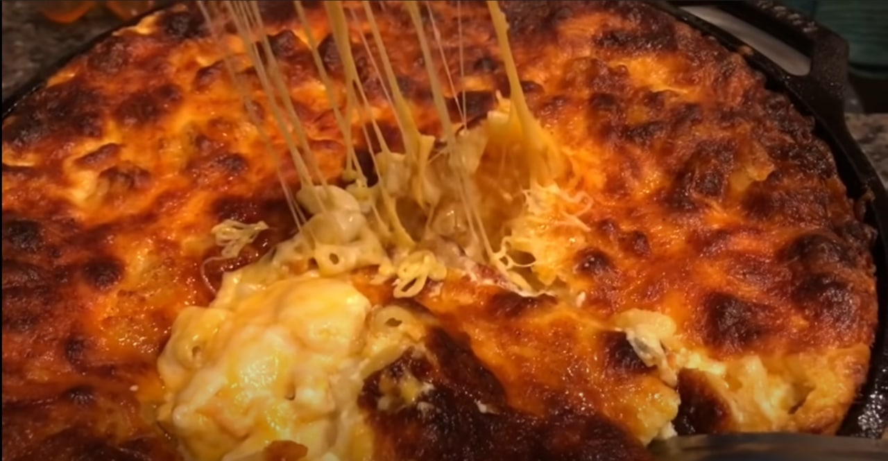

Mac & Cheese

This mac will be goated
Best one to make :)
Ingredients
- 32oz Chicken Stock
- 3 1/2 Cups of Elbow Pasta
- 8 Cups of Cheese of Choice
- 2 Cups of Whole Milk
- 1 1/2 Cup of Heavy Cream
- 3 Eggs
- 3/4 Cup of Sour Cream
- 1 Stick of Butter
- Paprika
- Salt & Pepper
Steps
- Boil Pasta
- Drain into another bowl
- Add butter to pasta then fully mix
- Add Sour Cream to Pasta then Fully Mix
- Add seasonings and some cheese to pasta and fully mix
- In another bowl mix heavy cream, eggs, seasoning, and whole milk together
- Grease up your pan
- Layer in past, cheese, sauce in that order
- Top with paprika if you'd like
- Put in oven for 45min
Back